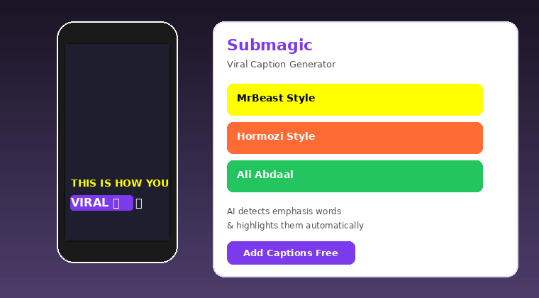
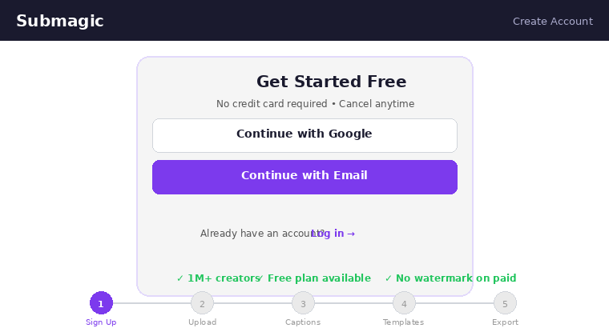
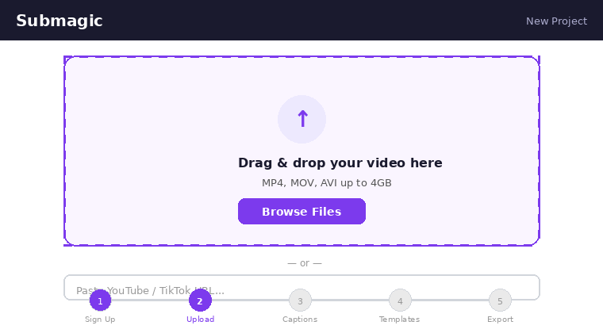
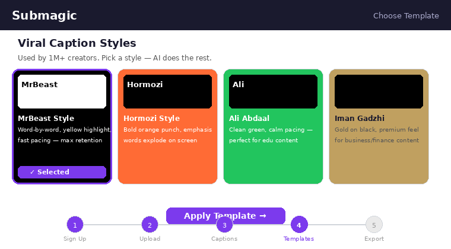
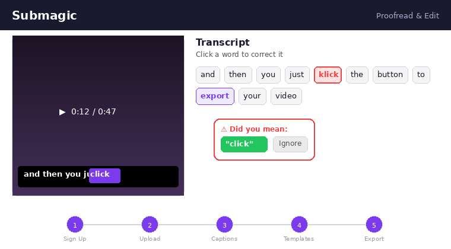

Why viral captions matter on TikTok in 2026
Roughly 80% of TikTok viewers watch with the sound off at least part of the time, and the algorithm uses on-screen text as a secondary ranking signal alongside spoken audio. Hard-coded captions also raise watch-time on every mainstream hook pattern we have tested in the last 90 days. That is why every top TikTok creator — MrBeast, Alex Hormozi, Ali Abdaal, Iman Gadzhi — uses the same big, word-by-word, keyword-highlighted caption style.
TikTok's native auto-captions are fine for accessibility, but they land as tiny grey text at the bottom of the frame with no emoji, no highlighting, and no style variation. That is the gap Submagic fills: it auto-transcribes your clip with ~98% accuracy, then lets you pick a viral template in one click.
If you want a full breakdown of where Submagic fits among caption tools, read our Submagic review or our wider best AI video tools ranking.

What you need before you start
- A Submagic account — submagic.co. Free trial includes 1 video. Starter plan is $19/month ($12/month annual).
- A vertical TikTok clip — 1080×1920, ideally 15–60 seconds for testing. MP4, MOV, or WebM.
- Clean audio — Record with a USB mic if possible. Accuracy drops with heavy background music.
- A modern browser — Chrome, Edge, or Safari. No app install.
Start with a free Submagic trial
Process one video free to test viral templates before you pay.
Try Submagic Free →Step 1: Create a Submagic account
Head to submagic.co and click the Get Started button top-right. You can register with Google or email — the Google flow takes about 15 seconds. No credit card is required for the free trial, but you will need one to upgrade to Starter ($19/month, or $12/month annual) later.
Once inside the dashboard, you will see the left nav with Projects, Templates, Brand Kit, and Subscription. Bookmark the dashboard URL; every TikTok export starts here.

Step 2: Upload your vertical video
From the dashboard click the big purple + New Project button. Drag your clip onto the upload zone or click Browse files. Submagic accepts MP4, MOV, and WebM up to 5 GB per file. Aim for the TikTok-native 1080×1920 resolution so captions land in the right vertical safe zone.
Upload takes about 10–20 seconds on a 50 Mbps connection for a 60-second clip. You will see a progress bar, then an automatic redirect to the project editor.

Step 3: Auto-transcribe in your language
Submagic will ask you to pick the spoken language — more than 50 options including English (US/UK/AU), Spanish, French, German, Portuguese, Japanese, Hindi, and Vietnamese. Click your language, then Generate captions. The Whisper-based engine takes roughly 30 seconds per minute of video and delivers about 98% word accuracy on clean audio.
Step 4: Pick a viral caption template
You now see the editor with your video on the left and a template carousel on the right. Submagic ships 35+ animated templates. The "viral" presets are named after the creators who popularised the style:
- MrBeast — white text, yellow keyword highlight, bouncy pop-in animation
- Hormozi — all-caps, word-by-word reveal, green active word
- Ali Abdaal — clean sans, subtle shadow, single-line layout
- Iman Gadzhi — bold italic, gold highlights, minimal emoji
Click any template once to preview it on your actual clip. Click again to apply. You can change templates freely up to the moment you export — this is the fastest way to A/B-test which style holds on your niche.

Step 5: Customize colors, emoji, and highlights
Open the Style panel on the right. You can tweak:
- Font — 40+ options, Montserrat and Inter are the safest bets
- Color — text, stroke, background pill, highlighted keyword
- Emoji frequency — Off / Low / Medium / High (Medium is our default for TikTok)
- Vertical position — 30%, 50%, 70% from the top. TikTok UI overlays the bottom 18% so keep captions above 70%.
- Keyword highlight — Submagic's AI auto-picks the punchy words; you can override per-clip
Submagic's AI also auto-inserts emoji matched to the spoken words — "money" gets a stack of cash, "workout" gets a flexed bicep. This alone saves 5–10 minutes per short versus CapCut.
Want the full viral shorts stack?
Submagic pairs perfectly with Opus Clip for repurposing long-form into shorts. See our full workflow.
Get Submagic →Step 6: Proofread the transcript
Click any caption block in the timeline to edit the transcript. The most common errors on Whisper-based engines are:
- Brand names — "Submagic" might transcribe as "sub magic"
- Acronyms — SEO, API, SaaS
- Proper nouns — your own name, city names
- Numbers and currency — "nine ninety-nine" vs "$9.99"
Fix these now. Submagic's editor auto-saves every change so you will not lose work if you refresh.

Step 7: Export and publish to TikTok
Click Export top-right, pick 1080p MP4, and hit Download. Export takes roughly 1–2 minutes for a 60-second clip. Download the file, then:
- Open TikTok mobile, tap the
+button - Choose
Uploadand select your exported file - Add 3–5 hashtags and a hook in the caption field
- Post or schedule
Common mistakes to avoid
- Captions in the bottom 18% — TikTok's UI overlays hashtags, username, and sound there. Move captions up.
- Skipping proofread — A single wrong word (especially your brand) kills credibility in the first 2 seconds.
- Too much emoji — On "High" frequency it looks like spam. Stick to Medium.
- Wrong language variant — Picking "English – US" for a strong UK/AU accent drops accuracy by 4–6 points.
FAQ
Ready to make your first viral TikTok?
Spin up a free Submagic account and follow this tutorial end-to-end — you will have a caption-ready clip in under 10 minutes.
Try Submagic Free →